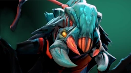

The Swarm

Герой выпускает рой из 12 жуков, которые цепляются за врагов на своём пути.
Жуки наносят урон и снижают броню цели до тех пор, пока не умрут.

Weaver сбегает от врагов лишь для того, чтобы напасть вновь.
Он способен на время стать невидимым или вовсе ускользнуть от смерти, вернув своё местоположение и состояние здоровья на несколько секунд назад.
Его изворотливость позволяет доставлять врагам массу неприятностей.
Герой выпускает рой из 12 жуков, которые цепляются за врагов на своём пути.
Жуки наносят урон и снижают броню цели до тех пор, пока не умрут.

Герой уходит из зоны видимости, что позволяет ему передвигаться с максимальной скоростью и наносить урон врагам, через которых он проходит.
Позволяет герою совершить несколько атак одновременно.

Герой перемещается в положение, где он был пять секунд назад, возвращая уровень здоровья и маны на прежний уровень. Не действует на перезарядку способностей и предметов, а также на золото и опыт.